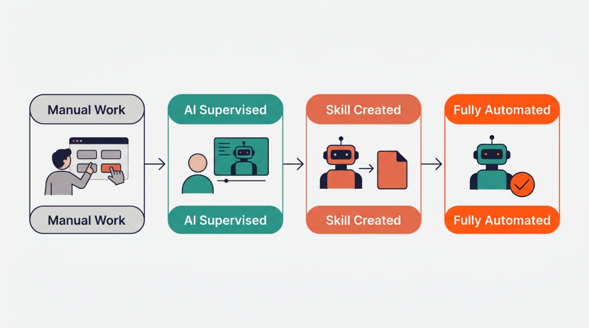
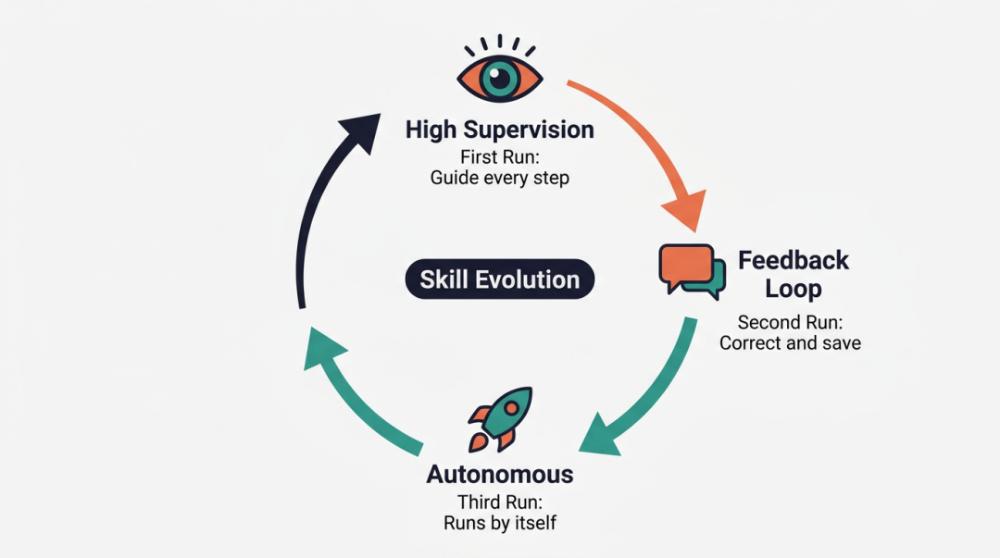
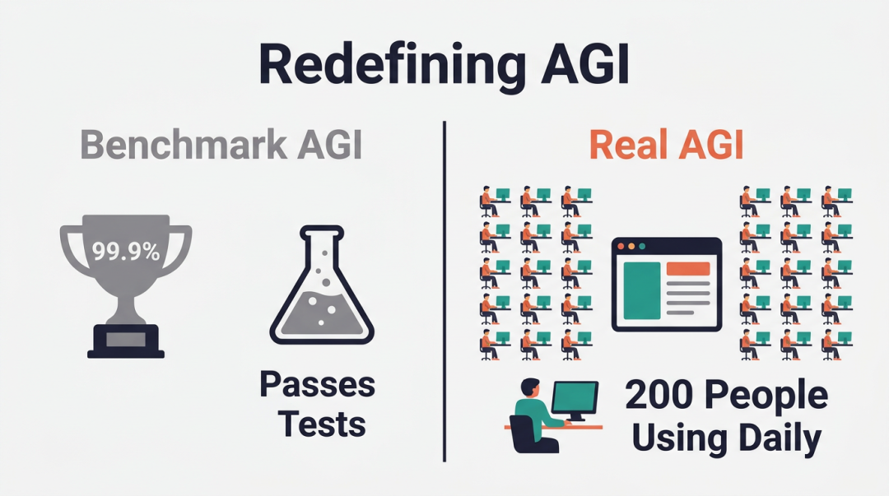

坚持两年每周手动上传视频的人，突然不干了。
Swix 在 Latent Space 社区的 AI in Action 分享会上，打开了自己的 Claude Cowork 界面。屏幕上，一个 AI 代理正在他的 Chrome 浏览器里，打开 Zoom 后台，点击「云录制」，下载共享屏幕视图，然后切换到 YouTube，逐个填写标题、描述、时间戳。
整个过程没有调用一行 YouTube API。
「我知道这听起来很蠢，」Swix 说，「但这就是我意识到 AGI 已经到来的时刻。」
会议室里19个人，有人在问技术细节，有人在质疑为什么不用 API。但 Swix 团队的200多名员工已经全员订阅了 Claude Cowork 的企业计划——每人每月200美元。
这不是演示。这是生产环境。
让我们看看 Swix 过去的工作流程。
每周五下午3点，Zoom 会议结束。然后他要做的事：进入 Zoom 后台找到最新录制，选择「共享屏幕+画廊视图」模式下载 MP4，切换到 YouTube Studio 上传视频，填写标题、描述，设置发布时间，裁剪静音片段，生成缩略图，最后点击发布。
「这些都是点击操作，完全不需要动脑。但就是烦。」
烦到什么程度？104周 x 15分钟 = 26小时。一整天的工作时间，用来做机械点击。
然后他给 Claude Cowork 写了一段话：「请下载 Zoom 云录制中的最新视频，上传到 YouTube，根据内容生成标题和描述，裁剪掉静音片段。」
第一次运行时出了错。但关键在于——Swix 可以实时看到它在做什么，可以在它卡住时帮它一把，可以在它完成后告诉它：「记住这个操作，写成一个 Skill。」
第二次调用了上次保存的 Skill。第三次，它主动询问：「需要我去 Zoom 设置里开启自动转录功能吗？」第四次，Swix 直接设置了定时任务：每周五下午3点自动运行。
从此，他再也没有手动上传过视频。

从手动操作到AI自动化的进化过程
会议聊天区里，Kevin 提问：「为什么不用 YouTube API？」
每个工程师都会问这个问题。调用 API 更快、更稳定、更便宜。
Swix 的回答很直接：「你看，YouTube API 需要我去 Google Cloud Console 注册应用，创建 OAuth 凭证，设置回调 URL，然后写代码处理 token 刷新逻辑。」
然后他展开一个浏览器标签页——Claude Cowork 正在自动执行他补充的任务：去 Google Cloud 后台注册 YouTube Data API 密钥。它自己点击「创建项目」，自己填写表单，自己复制 API Key，然后把密钥存到本地配置文件里。
更关键的是——它在你的浏览器里运行。你已经登录了 YouTube，已经登录了 Zoom。Claude Cowork 不需要管理 token，不需要处理权限过期，因为它用的是你的会话。
「真正的 AGI，不是写出更优雅的代码，是让不会写代码的人也能自动化一切。」
会议进行到一半，Swix 切换到另一个对话窗口。
「这是我的设计师在用的，这家伙在印度尼西亚，时差正好相反。」
屏幕上是一个长达97条回复的对话线程。设计师发出一个 Figma 设计稿链接，Claude Cowork 自动读取设计稿，生成 React 组件代码，部署到 Vercel，把预览链接发回来。
设计师看了预览，说：「按钮的圆角不对。」改。「动画需要慢一点。」改。「颜色跟 Figma 里的不一样。」改。
整个对话从晚上12点持续到早上9点。Swix 醒来时，AI Engineer 大会的官网已经完全重构完毕并部署上线了。
不是让现有工作变快。是让以前「不值得做」的工作，变得值得做。
回到 YouTube 上传的例子。
第一次运行，Claude Cowork 需要你告诉它每一步该怎么做。第二次，你告诉它「把操作写成 Skill」，它在本地生成一个配置文件。第三次，有人建议加入自动下载 Zoom 转录。第四次，又有人建议让 AI 生成封面图。
每一次反馈，都让这个 Skill 变得更完整。
「这就是记忆，」Swix 说，「一种非常慢的进化。」
可正是这种「慢」，让 Claude Cowork 和其他 AI 工具拉开了差距。OpenClaw、DevGPT、Bolt.new——都很强大，但都是「一次性执行者」。你给它任务，它完成，然后忘记。
Claude Cowork 不一样。它记住每一次你纠正它的方式，记住每一次你补充的细节，然后把这些记忆固化成 Skills。
这些 Skills 不是通用的。它们是从你的真实需求中长出来的。
「第一次运行你需要高强度监督，第二次给反馈让它更新，第三次它就能自己跑了——这才是自动化的正确路径。」
而这个路径，API 做不到。因为 API 是静态的，只能做开发者定义好的操作。但真实世界里，每个人的工作流程都不一样。你需要的不是一个完美的 API，而是一个能学会你习惯的代理。

Skills进化路径：从人工监督到自主运行
会议最后，Swix 透露了一个数字：Latent Space 团队200多名成员，全都订阅了 Claude Cowork 企业计划。每人每月200美元。
「这不是演示工具，这是生产环境。我们在用它处理 Zoom 设置、YouTube 上传、网站部署、表单填写——任何那种『你需要花5到15分钟在各种设置页面里点来点去』的任务。」
有人问：「非技术人员真的会用吗？」
Swix 的回答很简单：「你问问他们愿不愿意花200美元，换回每周15分钟被浪费在 Zoom 后台的时间。」
会议结束后，聊天区里有人说「我刚订阅了」，有人说「我在试着让它帮我填报销单」，还有人说「我让它自动生成周报，现在它已经能自己去 Jira 抓数据了」。
这不是技术爱好者的玩具。这是白领工作者的生产力革命。

AGI的真实定义：不是基准测试，是200人的生产环境
而这场革命的核心，不是更快的 API、更强的模型、更复杂的 Agent 架构。是一个简单到反直觉的设计：让 AI 在你的浏览器里，用你的账号，做你会做的事。然后记住。然后越做越好。
AGI 不是在 SWE-bench 上拿高分。AGI 是200个人在生产环境里每天都在用它干活。